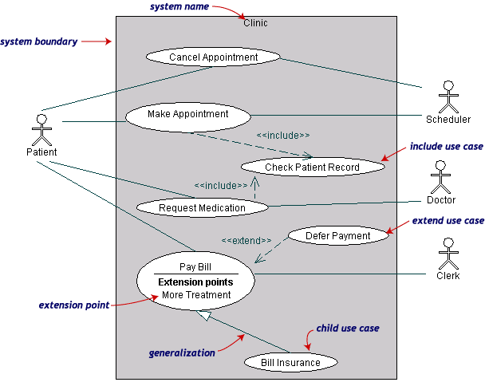

Use case diagrams are closely connected to scenarios. A scenario is an example of what happens when someone interacts
with the system. Here is a scenario for a medical clinic.
Actors are stick figures. Use cases are ovals. Communications are
lines that link actors to use cases.
A use case diagram is a collection of actors, use cases, and their
communications. We've put Make Appointment as part of a diagram
with four actors and four use cases. Notice that a single use case can
have multiple actors.
Use case diagrams give an outsider's view of a system. Every use case
diagram has actors, use cases, and communications. A simple use case diagram can
be expanded with additional features to display more information.
In the use case diagram you represent the subject of the use case
modeled by a box labeled with the name of the subject. You show actors outside the subject and use cases, which constitute the system behavior.
Actors and use cases are in relationships that define the structure of a
use case model.
- system boundaries - the subject of the use case model
- actors - roles adopted by things external to the system
- relationships
- generalizations
- includes
- extensions
The following use case diagram expands use cases defined in the original
medical clinic above.

Asystem boundaryrectangle separates the clinic system from the
external actors.
A use case generalization shows that one use case is simply a special
kind of another. Pay Bill is a parent use case and Bill Insurance is the child. A child can be substituted for its parent whenever necessary.
Generalization appears as a line with a triangular arrow head toward the parent
use case.
Includerelationships factor use cases into additional ones. Includes
are especially helpful when the same use case can be factored out of two
different use cases. Both Make Appointment and Request Medication include Check Patient Record as a subtask. In the diagram, include
notation is a dotted line beginning at base use case ending with an arrows
pointing to the include use case. The dotted line is labeled <<include>>.
An extend relationship indicates that one use case is a variation of
another. Extend notation is a dotted line, labeled<<extend>>,
and with an arrow toward the base case. The extension point, which
determines when the extended case is appropriate, is written inside the base
case.
Use case diagrams are helpful in three areas.
- determining features (requirements). New use cases often
generate new requirements as the system is analyzed and the design
takes shape.
- communicating with clients. Their notational simplicity
makes use case diagrams a good way for developers to communicate
with clients.
- generating acceptance tests. The collection of scenarios for a
use case may suggest a suite of test cases for those scenarios.